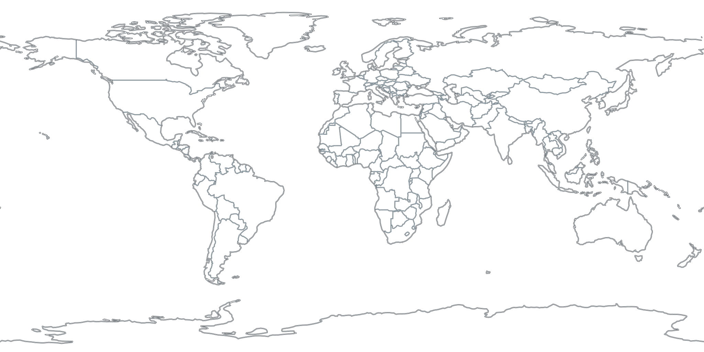

NASA GISTEMP v4
Global annual anomaly (°C) mapped to 150–850 Hz pitch.
GISTEMP Data ↗Flat view shows the complete source frame and all five latitude bands at once.


Loading…
Loading…
This interactive sonification turns 45 years of NASA Earth Information Center temperature frames (1980–2024) into deterministic sound—mapping global warming to pitch and scanning five latitude bands by color share.
Global annual anomaly (°C) mapped to 150–850 Hz pitch.
GISTEMP Data ↗512×256 RGB pixels classified into Cooler, Baseline, and Warmer tones.
SVS Archive ↗1980 · Arctic: inspecting visual-category vector.